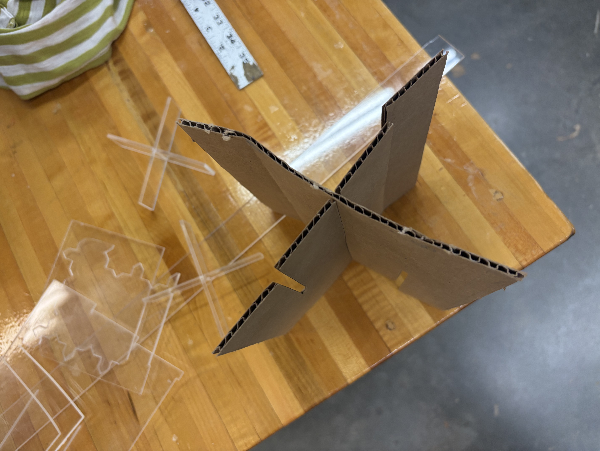
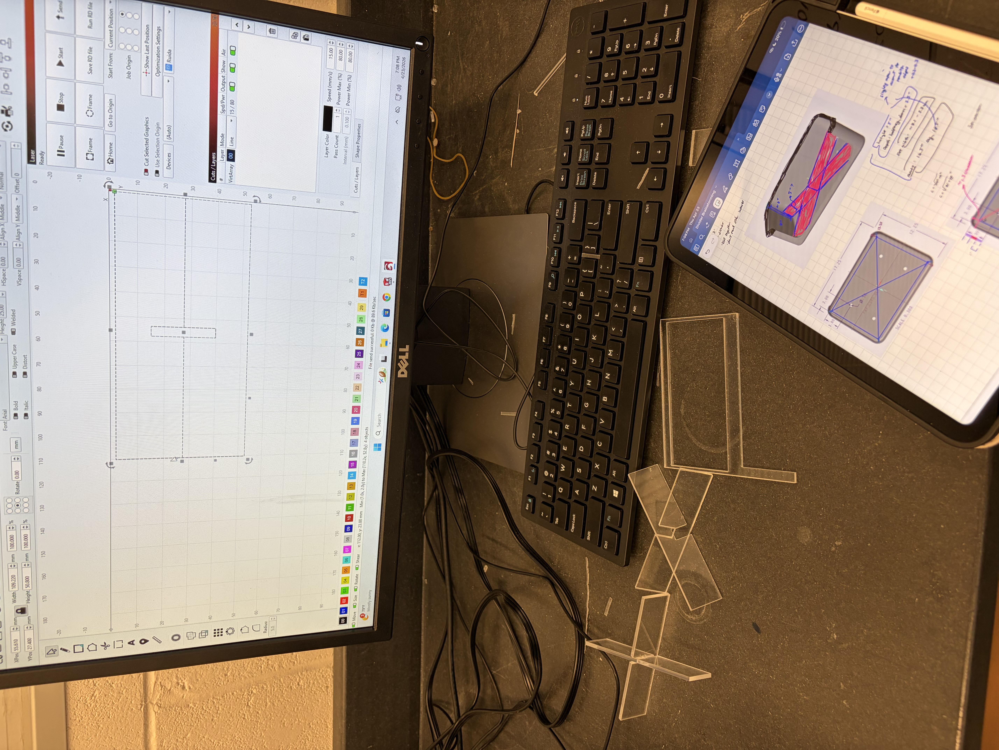
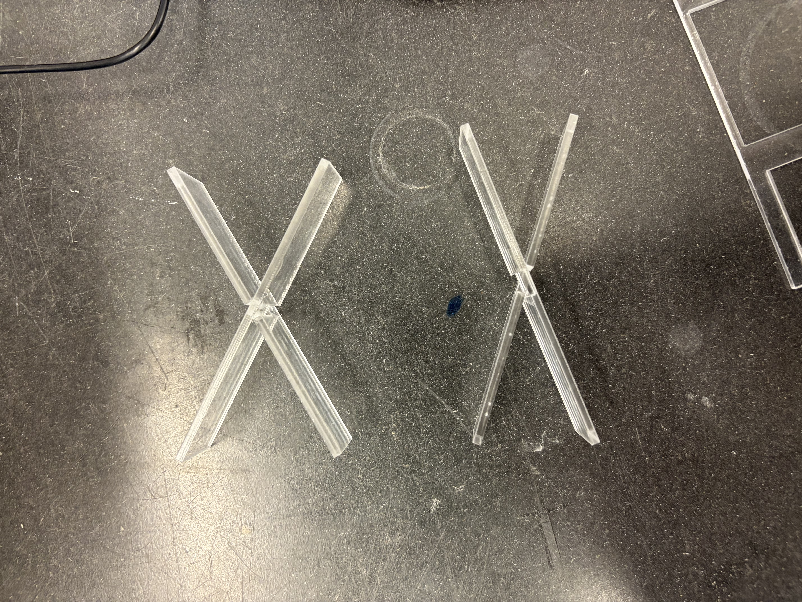
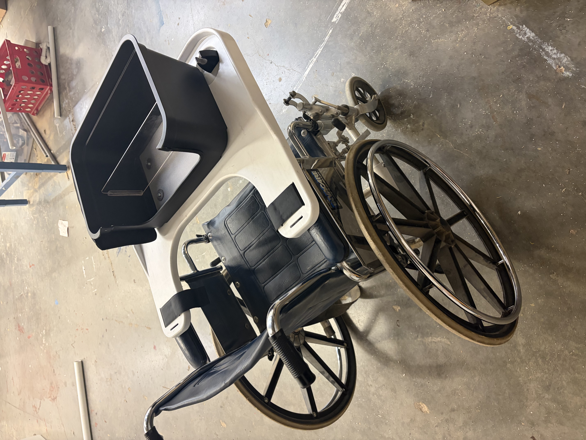

Wheelchair Grocery Transport System
A client at Calsted Independent Living needed a safer way to transport delivered groceries without interfering with wheelchair propulsion or requiring repeated rearward reaching. The final system positioned the basket in front of the user while preserving normal wheelchair operation.



I led the initial client call and independently designed, laser cut, and installed the removable 3 mm acrylic divider used to separate and stabilize groceries.
Design requirements
| Consideration | Design response |
|---|---|
| Wheelchair operation | Front-mounted placement preserved access for propulsion and maneuvering. |
| Reach | The basket was kept within forward reach instead of requiring repeated reaching behind the chair. |
| Load stability | Non-slip material, straps, protective foam, and a removable acrylic divider controlled grocery movement. |
| Weight and complexity | Client feedback moved the design away from heavier concepts and toward a simpler removable system. |
| Adaptability | The divider could be removed when an open basket volume was preferable. |
Fabrication and iteration



Testing and cost
The completed system was evaluated with planar shake testing. The design was also reviewed against client concerns about weight, strap tightening, and reach to the basket edge.
| Project measure | Result |
|---|---|
| Final cost | $147.53 |
| Budget | $400.00 |
| Budget remaining | $252.47 |
| Percent below budget | 63.1% |
| Divider material | 3 mm acrylic |
Outcome
The final design prioritized the client's actual use constraints over added mechanisms. It produced a removable front-mounted grocery system that could be tested and revised against a clear set of requirements.